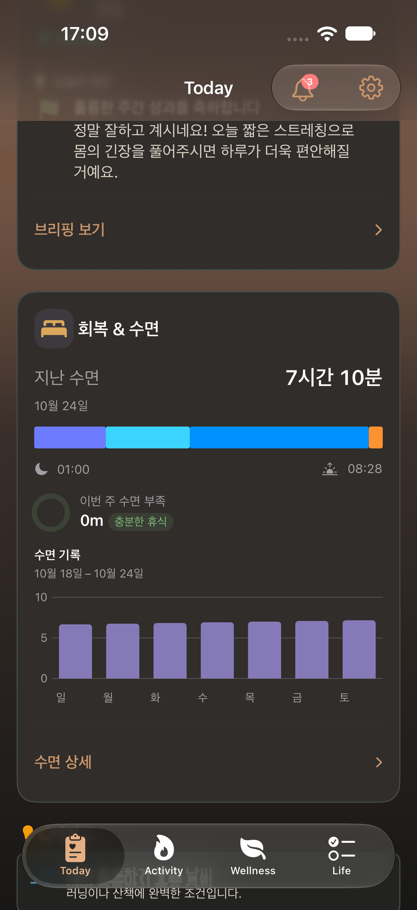

2026-10-24 · 전용 iPhone 18 Pro · 제품 소스 29e54f9a · 실제 SwiftUI, 테스트 자료 · UI 2건 통과. iPad·Duo 신규 캡처와 추가 단위 검사는 미완료.
최대 글씨 · 진행

TodaySupportCardsUITests/testDesertTodayProgressAtMaximumAccessibilityTextSize()
최대 글씨 · 수면 목표

TodaySupportCardsUITests/testDesertTodayProgressAtMaximumAccessibilityTextSize()
어두움 · 진행과 브리핑

TodaySupportCardsUITests/testDesertTodaySupportCardsAtBothAppearances()
어두움 · 회복과 수면

TodaySupportCardsUITests/testDesertTodaySupportCardsAtBothAppearances()
밝음 · 진행과 브리핑

TodaySupportCardsUITests/testDesertTodaySupportCardsAtBothAppearances()
밝음 · 회복과 수면

TodaySupportCardsUITests/testDesertTodaySupportCardsAtBothAppearances()